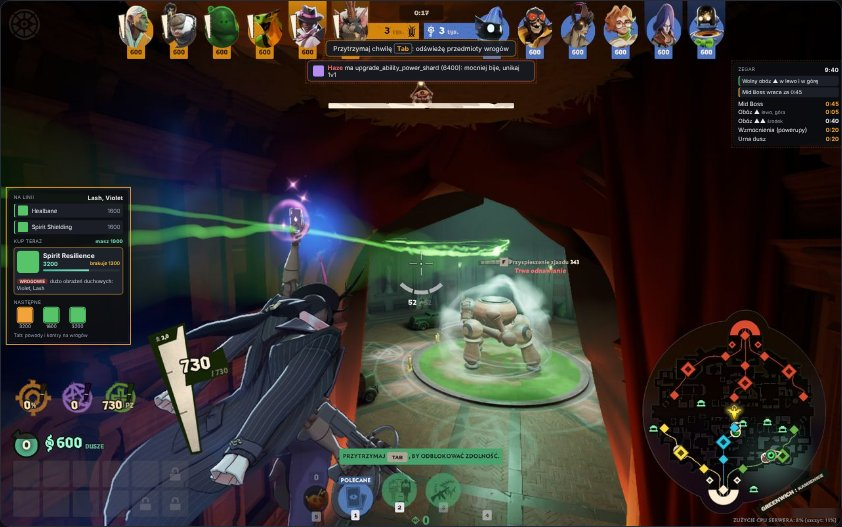
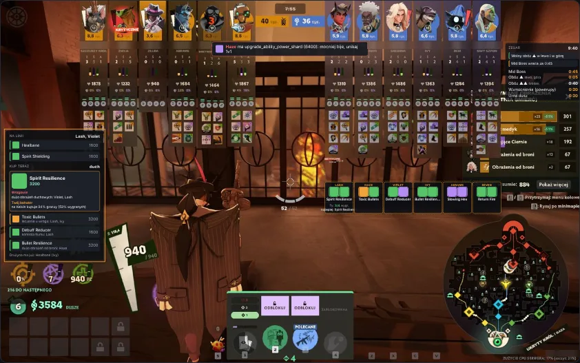
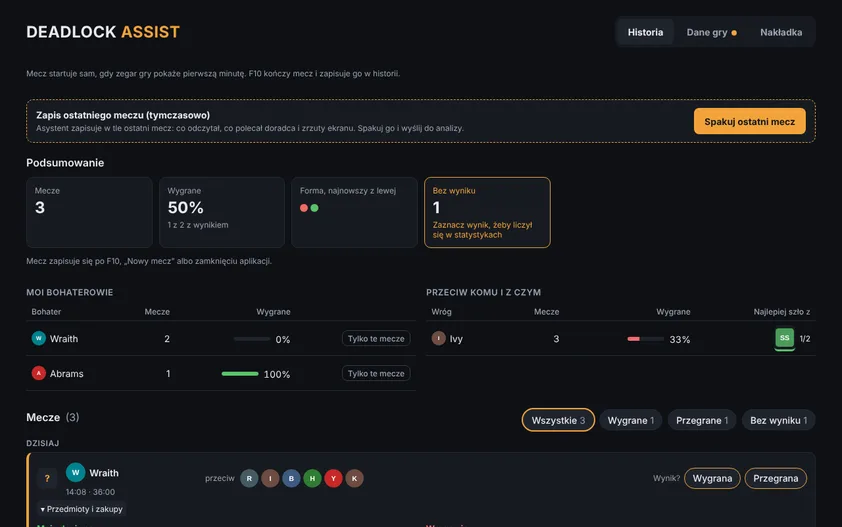

Counter items for the enemy team
Healbane vs healing, Silencer vs abilities. With price and reason.
Deadlock overlay · Windows 10/11
Reads the enemy team and their items from your screen, tells you what to buy and tracks camp and Mid Boss timers.
81% good counters, tested on 2,020 matches
Deadlock in borderless window · updates itself
Windows warning? “More info” → “Run anyway”.

Healbane vs healing, Silencer vs abilities. With price and reason.
The single best purchase right now, fitted to your build and souls.
Hold Tab and it sees what enemies bought, then updates the advice.
Until minute 10, cheap items against your lane opponents.
Jungle camps, Mid Boss, power-ups and the urn, with a direction arrow.
Farm minute by minute and what to improve next match.


Tested on 2,020 Emissary+ matches, 33,811 purchases.
81%
good counters
Picks that win more often vs that team than an average item.
29%
of real buys in its top 5
Share of players’ actual purchases that were in the advisor’s top 5.
+3.2 pp
higher win rate
at equal farm
Players who bought from the top 5 won more often.
Results from other players’ matches, not a guarantee. Version 1.2.6.
Works like screen recording, not like a cheat.
Unofficial fan tool. Valve does not publish a list of allowed programs.
Run the installer and set Deadlock to borderless window mode.
It detects the match on its own. Hold Tab now and then.
After the match, press F10 for the summary in History.
It never touches the game process; it only takes screenshots, like OBS or Discord. Valve doesn’t approve any third-party tools, so use it at your own risk.
No. Set Deadlock to borderless window, otherwise the overlay can’t show.
SmartScreen flags new apps. Click “More info” → “Run anyway”. Every update is signed.
From deadlock-api.com stats and what it sees on screen: the enemy team, their purchases and your souls.
Windows 10 or 11 (64-bit) and Deadlock in borderless window. Interface in English or Polish, switchable in the app.
Installing takes a minute.
Deadlock in borderless window · updates itself
Windows warning? “More info” → “Run anyway”.